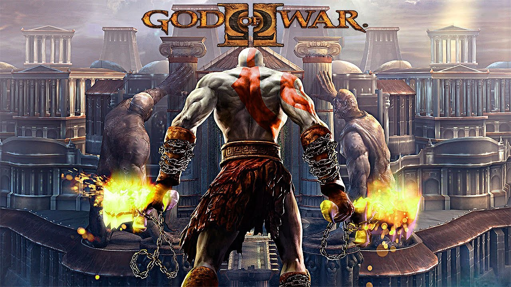

Videojuegos mas populares
A continuación ordenaremos algunos de los videojuegos mas populares por cada epoca:
Año 1990-2000:
- Super Mario World: Es el mejor juego en 2D de la saga. Es un juego de plataformas para Super Nintendo. Se publicó en 1989 y tomaria popularidad en los años 90, vendió más de 20 millones de copias en todo el mundo, y ha sido reeditado hasta 3 veces para Super Nintendo, GameBoy Advance y Wii. Uno de los juegos que marco infancia de muchos jugadores retro.
- Final Fantasy VII: Es un videojuego de rol desarrollado y publicado por la empresa Square para la plataforma PlayStation. Publicado en 1997, se trata de la séptima entrega de la serie Final Fantasy y la primera de la saga en presentar gráficos tridimensionales, mostrando personajes completamente renderizados sobre escenarios prerenderizados.
- Street Fighter II (1991): Es un videojuego de lucha originalmente lanzado para arcade en 1991. Es la segunda entrega de la saga Street Fighter y la secuela del original Street Fighter publicado en 1987. Uno de los juegos que mas emocionaban a los niños en las maquinas de Arcade y muchos usuarios aun siguen disfrutando de este videojuego para recordar su infancia.
- The Legend of Zelda: Ocarina of Time: Es un videojuego de acción-aventura de 1998 desarrollado por la filial Nintendo EAD y publicado por Nintendo para la consola Nintendo 64. La historia del juego se enfoca en el joven héroe Link, quien emprende una aventura en el reino de Hyrule para detener a Ganondorf, rey de la tribu Gerudo, antes de que encuentre la Trifuerza, una reliquia sagrada capaz de concederle cualquier deseo a su poseedor. Un gran juego de la plataforma Nintendo que le encanto a los usuarios.


Existen muchos mas videojuegos buenos del año 1990 pero estos fueron unos de los que mas le gustaron a los usuarios de esa epoca.
Año 2000-2010:
- Grand Theft Auto III: Es un videojuego desarrollado por DMA Design y publicado por la compañía Rockstar Games en el año 2001. Es el tercer título de la serie Grand Theft Auto, el tercero en presentar un ambiente de año actual, y el primero completamente hecho en 3-D. Una saga que le gusta mucho a los usuarios gamers, es un juego de modo libre y tambien encontraremos misiones para hacer, algunas complicadas y otras sencillas, sin duda de las mejores sagas de videojuegos.
- Resident Evil 4: Conocido en Japón como Biohazard 4, es un videojuego de disparos en tercera persona del estilo supervivencia y horror desarrollado por Capcom Production Studio 4 y distribuido por varias compañías de videojuegos, como Capcom, Ubisoft, Nintendo Australia, Red Ant Enterprises y THQ Asia Pacific.
- God Of War 2: Es un videojuego de acción y aventuras desarrollado por Santa Monica Studio y publicado por Sony Computer Entertainment. Lanzado por primera vez para la consola PlayStation 2 el 13 de marzo de 2007, es la segunda entrega de la serie God of War, la sexta cronológicamente y la secuela de God of War de 2005.
- Gears Of War 2: Es un videojuego de disparos en tercera persona, del género survival horror y acción-aventura, creado por la compañía desarrolladora Epic Games y anunciado por Microsoft para su distribución exclusiva para la videoconsola Xbox 360. Es la secuela del aclamado título Gears of War.

Estos fuernos unos de los mejores titulos de la decada, aunque sabemos que existen muchos mas, mencionamos los mas importantes.
Año 2010-2020:
- The Last Of Us: Es un videojuego de acción-aventura y horror de supervivencia desarrollado por la compañía estadounidense Naughty Dog y distribuido por Sony Computer Entertainment para la consola PlayStation 3 en 2013.
- Overwatch: Es un videojuego de disparos en primera persona multijugador, desarrollado por Blizzard Entertainment. Fue lanzado al público el 24 de mayo del 2016, para las plataformas PlayStation 4, Xbox One, Microsoft Windows y Nintendo Switch.
- Mario Kart 8 Deluxe: Es un videojuego de carreras desarrollado y publicado por Nintendo para la consola Nintendo Switch. Es la undécima entrega de la serie Mario Kart, novena en consolas de Nintendo, lanzado mundialmente el 28 de abril de 2017. Cuenta con todo lo visto previamente en Mario Kart 8.
- Grand Theft Auto V: Es un videojuego de acción-aventura de mundo abierto desarrollado por el estudio Rockstar North y distribuido por Rockstar Games. Fue lanzado el 17 de septiembre de 2013 para las consolas PlayStation 3 y Xbox 360. Es una de las mejores sagas de videojuegos que mas desarrollo a tenido, y sin duda de los videojuegos mas queridos por la comunidad.
- Red Dead Redemption II: Red Dead Redemption 2, estilizado Red Dead Redemption II es un videojuego de acción-aventura western, en un mundo abierto y en perspectiva de primera y tercera persona, con componentes para un jugador y multijugador. Fue desarrollado por Rockstar Games.


Esta decada nos trajo sin duda muchos titulos de videojuegos buenos, ademas de que es la decada en que se revolucionaron los videojuegos, porque nos dieron nuevas formas de verlos, y unos graficos mejores.